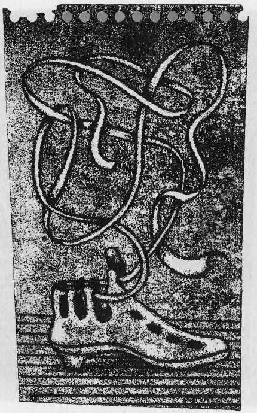

Das »Rote Buch« (so genannt nach seinem roten
Ledereinband), die wichtigste Quelle für den Ring-
Krieg, war ursprünglich Bilbos Tagebuch, dem später
in Westmark ein Band über die Hobbits hinzugefügt
wurde. Das Original, so Tolkien in seiner Einleitung
zum »Herrn der Ringe«, ist nicht erhalten, wohl aber
zahlreiche Abschriften von unterschiedlicher Qualität,
die teilweise nur fragmentarisch überliefert sind. (Zur
Handschriftenlage siehe: »Der Herr der Ringe«,
Band l, Seite 30 f.)
Nun hat ein erneutes sorgfältiges Studium dieses Quel-
lenmaterials - nicht zuletzt ausgelöst durch das begei-
sterte Echo der Leserschaft - zu einer Entdeckung
geführt, die für die Freunde der Hobbits sicher eine
kleine Sensation darstellt: Tolkien ist auf ein paar
flüchtig hingekritzelte Notizen und Anmerkungen in
den Handschriften aufmerksam geworden, die sich
beim genaueren Hinsehen als Gedichte erwiesen. Sie
sind unterschiedlich im Ton von den langzeiligen
Tom-Bombadil-Balladen bis zu den frechen kurzzeili-
gen Nonsens-Gedichten - und stammen aus unter-
schiedlichen Epochen. Wie die Quellenlage sich im
einzelnen darstellt, erläutert ein ausführliches Vor-
wort, fachkundig wie alles, was Tolkien zur Geschichte
Mittelerdes und speziell zum Dritten Zeitalter bisher
mitgeteilt hat. Kurz, Freunde der Hobbits finden inter-
essante neue Informationen im Vorwort - und die
Gedichte sind ein richtiger Lesespaß.
»Wer schon Hobbitomane ist, wird über das Buch ent-
zückt sein; andere wird es dazu bekehren, wie es mir
passiert ist.« The Listener
Die Originalausgabe erschien 1961
unter dem Titel
»The Adventures of Tom Bombadil
and other verses from The Red Book«
© 1962 by Allen & Unwin Ltd., London
Übersetzung der Gedichte:
Ebba-Margareta von Freymann
Übersetzung der Einleitung:
Thelma von Freymann
Über alle Rechte der deutschen Ausgabe
verfügt die Verlagsgemeinschaft
Ernst Klett Verlage KG - J. G. Cotta'sche
Buchhandlung Nachfolger GmbH, Stuttgart
Printed in Germany 1984
Fotomechanische Wiedergabe
nur mit Genehmigung des Verlages
Design: Dietrich Ebert, Reutlingen
Satz: Steffen Hahn, Kornwestheim
Druck: Gutmann + Co., Heilbronn
ISBN 3-608-95009-5
CIP-Kurztitelaufnahme der Deutschen Bibliothek
Tolkien, John Ronald Reuel:
Die Abenteuer des Tom Bombadil
und andere Gedichte aus dem Roten Buch /
J. R. R. Tolkien.
Aus d. Engl. übertr. von
Ebba-Margareta von Freymann. ~
Stuttgart: Klett-Cotta, 1984.
(Hobbit-Presse)
Einheitssacht.:
The adventures of Tom Bombadil
and other verses from The red book <dt.>





Das »Rote Buch« enthält eine große Zahl von Gedichten. Von
diesen sind einige in die Erzählung »Der Herr der Ringe« einge-gangen oder in die Geschichten und Chroniken, die sich daran anschließen. Zum größeren Teil jedoch finden sie sich auf losen Blättern, manche auch an den Rand von Manuskripten oder auf leere Stellen hingekritzelt. Bei den letzteren handelt es sich meist um Nonsensgedichte, die selbst im Falle der Lesbarkeit nicht mehr verständlich sind, oder um Fragmente, deren Urform schon zum Zeitpunkt der Niederschrift in Vergessenheit geraten war.
Solche Stücke sind die Nummern 4,11 und 13. Ein besseres Beispiel für den Typus wäre allerdings diese Marginalie zu Bilbos
»Kommt erst der Winter wieder her«:
Wenn Winter an zu beißen fängt,
Der Hintermann zum Weißen drängt.
Ist kahl der Baum, fällt weiß der Schnee,
Ist fahl der Raum, doch heiß der Tee,
Und wird es kalt, dann heiz' ich ein,
Dann knistert's bald im Reisigschein.
Was heißt dann aber »Hintermann«?
Daß er auf »Winter« reimen kann!1'
Unsere Auswahl bringt ältere Texte, die sich hauptsächlich auf auenländische Sagen und Schwanke aus dem ausgehenden Dritten Zeitalter beziehen und allem Anschein nach von Hobbits
stammen, namentlich von Bilbo und seinen Freunden oder deren direkten Nachkommen. Allerdings werden diese nur selten aus-
•
1) Anm. d. Übers.: Diese Übersetzung stimmt inhaltlich nicht mit dem Original überein. Da es sich aber ohnehin um Nonens handelt, schien es mir nur wichtig, die Art von Sprachspielerei wiederzugeben, die für dieses genus literarum charakteristisch ist.

drücklich als Verfasser genannt. Die Stücke, die außerhalb der Erzählungen vorliegen, wurden wahrscheinlich nach mündlicher Überlieferung niedergeschrieben, und zwar von verschiede-nen Schreibern.
Im »Roten Buch« heißt es, daß Nr. 5 auf Bilbo und Nr. 7 auf Sam Gamdschie zurückgeht. Nr. 8 ist mit SG gezeichnet; diese
Zuschreibung kann man akzeptieren. Auch Nr. 12 trägt die
Signatur SG, in diesem Falle kann Sam aber höchstens einem
älteren Stück eine neue Fassung gegeben haben. Es gehört zu jenem populären Überlieferungsgut, das Tiere zum Gegenstand von Ulkversen machte und den Hobbits offenbar besonderes
Vergnügen bereitete. Im »Herrn der Ringe« sagt Sam, daß Nr. 10
im Auenland volkstümlich sei.
Nr. 3 ist ein Beispiel für einen anderen Typus, an dem die Hobbits ihren Spaß hatten: eine Gedichtform bzw. eine Geschichte, die in den eigenen Anfang mündet, so daß man sie ad infinitum auf-sagen kann, bis die Hörer sich zur Wehr setzen. Davon finden sich im »Roten Buch« mehrere Beispiele, aber die übrigen sind einfach und kunstlos. Das Stück Nr. 3 ist bei weitem am längsten und am sorgfältigsten ausgefeilt; es stammt zweifellos von Bilbo.
Darauf deutet seine auffallende Verwandtschaft mit dem
Gedicht, das Bilbo als eigenes Werk in Elronds Haus vortrug.
Seinem Ursprung nach ein »Nonsensgedicht«, ist es in der bruchtaler Fassung umgeformt und den hochelbischen und nümenöri-
schen Sagen von Earendil einigermaßen inkongruent überge-
stülpt - wahrscheinlich, weil Bilbo dieses Metrum erfunden hatte und stolz darauf war. Es findet sich sonst nirgends im »Roten Buch«. Die hier abgedruckte ältere Version muß schon bald nach Bilbos Rückkehr von seiner Reise entstanden sein. Der Einfluß eibischer Überlieferung ist zwar unverkennbar, diese wird aber nicht ernstgenommen, und die Namen (Derrilyn, Thellamie, Beimarie, Aerie) sind bloße Erfindungen, die den Klang des Elbi-

sehen nachahmen, in der Eibensprache jedoch gar nicht vorkommen.
Der Einfluß der Ereignisse am Ende des Dritten Zeitalters und die Erweiterung des auenländischen Horizontes durch den Kon-takt mit Bruchtal und Gondor sind in anderen Texten deutlich greifbar. Nr. 6, hier allerdings neben Bilbos »Mann im Mond« pla-ziert, und das letzte Gedicht, Nr. 16, müssen ursprünglich aus Gondor stammen, denn ihnen liegen offenkundig Überlieferungen von Menschen zugrunde, die in Küstenländern wohnten und mit Strömen vertraut waren, die ins Meer flössen. In Nr. 6 wird Belfalas (»die Bucht von Bei«) sogar namentlich genannt. Nr. 16
erwähnt die Sieben Flüsse,2' die durch das Südliche Königreich flössen, und verwendet den gondoranischen Namen Firiel (i. e.
»sterbliche Frau«) in seiner hochelbischen Form.3' In Langstrand und Dol Amroth war die Erinnerung an die alten elbischen
Wohnsitze und auch an den Hafen an der Mündung des Mor-
thond noch lebendig, von dem aus »westliche Schiffe« schon in den Tagen von Eregions Fall im Zweiten Zeitalter in See gegan-gen waren. Diese zwei Texte sind also nur Neufassungen von
Stoffen aus dem Süden, die allerdings erst über Bruchtal zu Bilbos Kenntnis gelangt sein dürften. Auch Nr. 14 geht auf bruchtaler Sagengut eibischer und nümenörischer Herkunft zurück, das von den heroischen Tagen am Ende des Ersten Zeitalters handelt; ein Echo der numenörischen Sage von Türin und Mim dem
Zwerg klingt darin nach.
•
2) Lefnui, Morthond-Kiril-Ringló, Gilrain-Sernui und Anduin.
3) Diesen Namen trug eine Prinzessin von Gondor, durch die Aragorn seine Abstammung von der Südlichen Linie herleitete. Auch eine Tochter Elanors, der Tochter von Sam, hieß so, jedoch muß ihr Name dem Gedicht entlehnt worden sein, sofern überhaupt ein Zusammenhang besteht; dieses kann nicht in der Westmark entstanden sein.

Nr. l und 2 stammen offensichtlich aus Bockland. Die Urheber kennen sich in der ganzen Gegend und speziell im Tal der Weidenwinde so genau aus,4) wie es für Hobbits westlich des Bruchs kaum denkbar ist. Diese Texte zeigen auch, daß die Bockländer Bombadil kannten;5' allerdings hatten sie von seinen wahren Kräften wohl ebensowenig eine Vorstellung wie die Auenländer von denen Gandalfs: Beide galten als freundliche Personen, rät-selhaft zwar und unberechenbar, aber doch eher zum Lachen.
Nr. l ist das ältere Stück und besteht aus einer Reihe von Bombadil-Geschichten in ihrer hobitischen Version. Nr. 2 verwendet ähnliches Erzählgut, wenngleich sich Toms Spaße hier gegen
seine Freunde richten, deren launige Reaktion auch eine Spur von Furcht verrät; wahrscheinlich ist dieses Gedicht aber viel später entstanden, nach dem Besuch Frodos und seiner Gefähr-ten im Hause Bombadils.
Den hier vorgelegten Gedichten hobitischen Ursprungs sind fast durchgehend zwei Züge gemeinsam: Sie zeigen eine Vorliebe für sonderbare Wörter und ausgefallene Reime und Metren - dem
schlichten Gemüt der Hobbits galt dergleichen wohl als Ausweis hoher Inspiration; in Wirklichkeit handelte es sich bloß um Nachahmung eibischer Praxis. Weiterhin sind sie, wenigstens oberflächlich betrachtet, spielerisch, geradezu respektlos; allerdings mag sich der Leser hin und wieder unsicher fragen, ob nicht
•
4) Grindwall war eine kleine Anlegestelle am Nordufer der Weidenwinde. Sie lag außerhalb des Hags und war durch einen Zaun geschützt, der bis ins Wasser hinunterreichte. Oberhalb, auf der schmalen Zunge zwischen dem Brandywein und dem Hohen Hag, lag der Weiler Dornbühl. An der Mündung des Auenbronns in den Brandy wein, Meite genannt, gab es einen Landesteg, von dem ein Heckenweg nach Tiefenhain führte und dann weiter zur Landstraße, die durch den Bruch nach Rohrholm und Stock lief.
5) Wahrscheinlich waren sie es sogar, die ihm diesen Namen gaben (die Form ist bockländisch); viele Namen älterer Herkunft hatte er schon.

mehr dahintersteckt. Nr. 15, ohne Zweifel hobitischer Herkunft, ist eine Ausnahme. Jüngeren Datums als die übrigen Stücke,
gehört es dem Vierten Zeitalter an; wir haben es aufgenommen, weil jemand »Frodos Traum« darüber gekritzelt hat. Das ist
bemerkenswert: Daß Frodo selbst das Gedicht geschrieben
hätte, muß zwar als außerordentlich unwahrscheinlich gelten, jedoch zeigt diese Überschrift, daß man es auf jene dunklen und quälenden Träume bezog, die ihn während seiner letzten drei Jahre im März und Oktober heimsuchten. Von Hobbits, die dem
»Wanderwahn« verfielen und, soweit sie überhaupt zurückkehrten, sich fortan sonderbar und schweigsam zeigten, handelten aber mit Sicherheit auch andere Geschichten. In der Phantasie der Hobbits war das Meer zwar von jeher hintergründig gegen-wärtig, jedoch herrschte gegen Ende des Dritten Zeitalters im Auenland eher eine Stimmung der Angst vor dem Meer und des
Mißtrauens gegen elbische Überlieferungen, und die Ereignisse und Veränderungen, mit denen jenes Zeitalter zu Ende ging,
waren gewiß nicht dazu angetan, solche Ängste vollständig zu zerstreuen.


Tom, der alte Bombadil, stets vergnügt und munter,
Trug den Kittel himmelblau, gelbe Stiefel drunter,
Grünen Gürtel um den Leib, Hosen ganz aus Leder,
Auf dem hohen, spitzen Hut eine Schwanenfeder.
Am Hügelhange stand sein Haus, nah der Weidenwinde,
Die zu Tale schlängelte, bald langsam, bald geschwinde.
Sommers trieb er sich herum auf den weiten Wiesen,
Pflückte Butterblumen gern, die auf solchen sprießen,
Lief den Schatten hinterher, neckte dicke Hummeln,
Die sich gern im Blütenmeer mit Gebrumme tummeln.
Saß darauf gemächlich still, Stunde über Stunde,
Saß am Uferrand im Sand, blickte in die Runde -
Hing ihm lang der Bart herunter, baumelte ins Wasser;
Goldbeere tauchte auf: »Ei, du Wasserspaßer!«
Zupfte ihn am spitzen Bart, und Tom begann zu zucken,
Rutschte unversehens ab und mußte Wasser schlucken.
»He, Tom Bombadil, wohin geht die Reise?
Was hustest du und prustest du so lächerlicherweise?
Machst den kleinen Fischen Angst, verscheuchst die Entenkinder Und ertränkst zu guter Letzt den eigenen Zylinder!«
»Bring doch du ihn mir zurück - sei so lieb und gnädlich!
Waten macht mir kein Pläsier, ist gesundheitsschädlich.
Dann geh zurück und schlaf nur ein auf deinem eignen Pfühle In deiner Mutter Kämmerlein - du liebst dir ja das Kühle!«
Goldbeere schwamm davon, tauchte lachend unter,
Tom, der folgte ihr nicht nach, blieb verschmitzt und munter

In der Sonne oben sitzen, trocknete die Feder
Und den Hut in aller Ruh samt dem Hosenleder.
Da erwachte Weidenmann und begann zu singen,
Tom mit Liedern einzulullen, in den Schlaf zu zwingen.
Schnipp! Schon schlug die Falle zu! Hatte keinen Schlüssel!
Ja, da lag er wie ein Fisch auf Weidenmannes Schüssel.
»Ha, Tom Bombadil, was ist dir eingefallen?
Spionierst mir etwa nach in meinen eignen Hallen?
Störst du mich beim Trinken, dann laß ich dich ertrinken!
Kitzelt mich dein Federhut, mußt du sinken .. . sinken . . .«
»Guter alter Weidenmann, räch dich nicht so saftig,
Bin schon gliedersteif genug, wahrlich und wahrhaftig
Ist unbequem dein Gästebett, drum löse mir die Schlaufen,
Laß mich freundlich wieder frei und geh dein Wasser saufen, Mach es dann Goldbeere nach, die ging auch wieder schlafen, Tauchte in den Fluß hinab, in ihren Kinderhafen!«
Der Alte hörte grämlich zu, dann löste er die Schlaufen,
Knarrte, brummte, schloß die Tür, ließ Tom nach Hause laufen.
Tom lief längs der Weidenwinde, aber ohne Eile,
Setzte sich am Waldrand nieder, hörte eine Weile
Dem Gesang der Vögel zu, die im Gezweige hüpften.
Schmetterlinge schaukelten, und Libellen schlüpften
Übers Wasser, bis zuletzt graue Wolken stiegen,
Sonne sank, das Licht begann, dem Dunkel zu erliegen.
Da bekam er's mit der Eile! Schon fiel kalter Regen,
Löcher schlug der in den Fluß und Mulden allerwegen;

Wind fuhr pfeifend durch das Laub, tropften neue Tropfen,
Tom verkroch sich in ein Loch ohne anzuklopfen.
Da schoß Vater Dachs heraus, weißgestreift die Stirne,
Bösen Blickes fauchte er: »Bist du ganz bei Hirne?
Diese Höhle hier gehört uns, mir und der Familie,
Meinen Söhnen, meinen Töchtern, meinem Weib Ottilie . . .«
Alle faßten ihn am Kragen und den Stiefelschäften,
Zogen ihn und zerrten ihn hinab nach Leibeskräften,
Setzten sich in ihre Tunnel, knurrten dort bedrohlich:
»He, Tom Bombadil! Der und jener hol dich!
Weshalb kommst du und woher? - Wir haben dich gefangen
Und lassen dich nicht wieder frei und nie hinausgelangen!«
»Höre, guter alter Dachs, und laß dir etwas sagen:
Augenblicks laßt ihr mich ziehn, statt hier herumzuklagen!
Ich muß heim! Zur Hintertür geht's auch meinetwegen,
Unter Dorngestrüpp sogar kam sie mir gelegen!
Putzt euch dann den Schmutz vom Pelz, den Schlamm von
euren Schnuten,
Geht zur Ruh wie Goldbeere und Weidenmann, ihr Guten!«
Da riefen sie mit einem Mund: »Wir bitten um Verzeihung!«
Und schoben ihn zur Tür hinaus. So glückte die Befreiung.
Dann krochen sie in ihren Bau, zitterten und bebten
Hinter ihrer Eingangstür, die sie rasch verklebten.
Der Regen hatte aufgehört, der Abendhimmel blaute,
Als Tom vergnügt nach Hause kam und nach dem Rechten
schaute.
Tür und Fenster schlug er auf - im Küchenlampenschimmer
Tanzten ihren Abendtanz die Motten so wie immer.

Dunkel kroch den Hang herab, Tom holte eine Kerze,
Stieg hinauf, die Treppe ächzte wie in stillem Schmerze.
Drückte Tom auf seine Klinke, hörte eine Stimme
Plötzlich sich entgegenrufen, eine heisere, grimme:
»Ho, Tom Bombadil! Hinter deiner Türe
Lauert schon der Gräbergauch, daß er dich entführe
In sein graues Reich hinab! Hast mich wohl vergessen?
Unter meinem Ring aus Steinen sollst du Erde fressen!
Bin gekommen, dich zu holen! Hör es nur mit Zittern:
Deine Knochen sollen bald im Hügelgrab verwittern!«
»Heb dich von hinnen, Gauch, und kehre niemals wieder!
Nimm dein scheeles Auge mit und deine Schauerlieder!
Fürchte mich vor Sprüchen nicht und nicht vor hohlem Lachen -
Geh zurück, woher du kommst, mit deinen Siebensachen!
Leg den Knochenschädel sanft auf dein hartes Kissen,
Niemand wird dir böse sein oder dich vermissen!
Mach es nur Goldbeere nach, mach es wie die ändern,
Selbst der alte Weidenmann ließ mich weiterwandern.
Fahr hinab in deine Grube, um auf Gold zu brüten,
Darfst die Schätze ungestört und unaufhörlich hüten!«
Ja, da floh der Gräbergauch wie andere Gespenster
Klagend aus dem warmen Haus durch ein offnes Fenster,
Husch! Der Schatten fegte fort und tauchte in die Grube,
Knochenrasselnd legte er sich in die eigne Stube.
Tom, der gute Bombadil, hatte endlich Ruhe,
Seinen Kittel warf er ab, Hut und Hemd und Schuhe,
Süßer als sie alle schlief er, schnarchte, daß es dröhnte,
Hören durfte jeder gern, wie Tom der Ruhe frönte.

Er wachte auf im Morgenlicht, sprang aus seinem Bette,
Pfiff und sang den Staren gleich mit ihnen um die Wette:
»Komm-komm! Dinge-long! Dinge-ling, mein Schätzchen,
Komm herbei und halt mit mir das erste
Morgenschwätzchen . . .«
Stülpte nun den Hut sich auf, fuhr in Wams und Kittel,
Fenster auf und Luft herein! Das sind so Freudenmittel!
Neunmalkluger Bombadil, vorsichtiger Geselle,
Blauen Kittel trug er gern, Stiefel, gelbe, helle,
Niemals fing ihn jemand ein auf krausen Wanderungen
Oder auf den Wasserwegen, ebenso verschlungen.
Aber eines Tages lief er stracks zu jener Stelle,
Wo Goldbeere singend saß im Schilfe ihrer Quelle.
Den Vögeln sang sie Lieder vor, Fluß- und Quellenlieder,
Gelösten Haares saß sie da im silbergrünen Mieder.
Er griff nach ihr - er hielt sie fest! Wasserratten stoben, Reiher kreischte schrill und stieg aus dem Schilf nach oben.
»Schätzchen, komm mit mir nach Haus! Der Tisch steht schon
beladen -
Honigseim und gelber Schmand, Butter, weiße Fladen,
Alles wartet deiner nur! Am Fenster nicken Rosen,
Klettern bald zu dir herein, die Herrin zu liebkosen.
Komm, folge mir ins Hügelhaus, den Mutterfluß verlasse!
Kein Freier steigt zu dir hinab ins Düstere und Nasse!«
Hochzeit wurde da gehalten, fröhlich war ein jeder.
Tom, gekrönt mit Löwenzahn, ohne Hut und Feder,
Mit Vergißmeinnicht die Braut im Schwerterlilienkranze
Wirbelte und wiegte sich mit Bombadil im Tanze,

Silbergrün umfloß das Kleid ihre schlanken Glieder,
Tom, der legte seinen Arm um ihr grünes Mieder,
Sang und trällerte dabei, summte wie die Hummel -
Und so endete das Fest und der Große Rummel.
Im Hause glommen Lampen schon, weiße Betten lockten,
Da kamen späte Gäste an - pst pst! Die Schritte stockten,
Husch! In den Keller zog die Schar zu einem Hochzeitstänzchen, Von Lehm gesäubert waren sie, gestriegelt jedes Schwänzchen!
Am Fensterladen stand ein Gast - der letzte Spätling klopfte: Weidenmann, dem Wasser noch aus allen Zweigen tropfte.
Mutter Weidenwinde seufzte, Gräbergauch desgleichen,
Aber er lag angekettet, konnte nicht entweichen.
Tom, den störten Schritte nicht, Tänze oder Laute,
Oder gar, was sich an Seufzern nachts zusammenbraute,
Wachte auf wie neugeboren früh am nächsten Morgen,
Trillerte wie eine Lerche ohne Gram und Sorgen:
»Schätzchen, komm! Die Sonne drückt auf die Welt ihr Siegel!«
Goldbeere flocht ihr Haar zum Zopfe vor dem Spiegel.


Das alte Jahr verfärbte sich, der Westwind brauste wieder,
Tom fing ein Buchenblatt, das fiel im Walde nieder:
»Einen Glückstag weht mir zu, wohlgesinnte Brise!
Faß die Chance gleich beim Schöpf, ja, gerade diese!
>Später< ist als Schelm bekannt - ich hole meinen Kahn her, Fahr darin den Fluß hinab, was eine wahre Lust war!«
Zaunkönig saß auf einem Zweig: »Zick, zick, zick! Versteh mich, Was du mir nicht selbst verrätst, ahne und erspäh ich!
Künde deine Ankunft an gleich am richtigen Orte . . .«
»Untersteh dich, Plappermaul! Keine weiteren Worte,
Oder es ergeht dir schlecht! Immer mußt du klatschen,
Alles trägst du stets herum durch dein leidiges Tratschen!
Sagst du Weidenmann ein Wort, ist's um dich geschehen,
Werde dich bei Feuersglut am Bratenspieße drehen!
Das wird dich vom Klatschen heilen, von den frechen Possen, Und dein Plapperschnabel bleibt für alle Zeit geschlossen . . .«
Wippte Vöglein mit dem Stert, rief im Weiterfliegen:
»Fang mich erst, fang mich erst! Erst mußt du mich kriegen!
Weidenmann ins rechte Ohr sag ich, was ich ahne:
>Heute hat er manches vor, heute geht's zu Kahne!
Eile dich, eile dich, den Abendtrunk zu trinken,
Ehe denn die Sonne sinkt und die Sterne blinken!<«
Tom, der lachte still für sich: »Mag schon sein, zu schwätzen Gehe ich ein andermal, ohne mich zu hetzen,
Heute aber paddle ich, soll der Fluß mich tragen!«
Holte seinen Kahn darauf voller Wohlbehagen
Aus dem heimlichen Versteck, glättete die Ruder,
Sang und trällerte für sich: »Alter Tippelbruder,

Heute geht es nicht zu Fuß, mache mir's gelinde,
Fahre auf dem Fließefluß, auf der Weidenwinde!«
»Holdrio, Tom Bombadil! Wo willst du denn hingehn?
Sitzt in einem alten Trog! Bist du wohl am Durchdrehn?«
»Möchte an den Brandywein, Freunde aufzusuchen,
Zünden Freudenfeuer an, backen mir schon Kuchen!
Hobbits kenn ich in Hagsend, sind mir wohlgesonnen,
Hin und wieder fahr ich hin - das ist nicht gesponnen!«
»Ach, dann grüß die Sippe mir! Bring Nachricht von den Meinen!
Wo jagen sie den Fischen nach, den großen oder kleinen?«
»Nein!« Tom schüttelte den Kopf: »Kannst mich nicht erweichen, Rudern will ich unbeschwert von dir und deinesgleichen!«
»He, he, he! Hochnäsiger Tom! Daß bloß der Kahn nicht absäuft!
Paß auf Schlinggewächse auf, damit der Tag gut abläuft!«
»Halt den Schnabel, Vogel Blau, du alter Schwadronierer,
Bleib nur du beim Grätenfisch und putz dir dein Gefieder!
Schon oft hab ich von dir gehört und deinen leidigen Sitten: Von außen schmuck, von innen pfui und ebenso inmitten!
Den Schnabel trägst du viel zu hoch und drehst ihn nach dem Winde,
Das wird wohl noch dein Ende sein. Mach fort, und zwar
geschwinde!«
Eisvogel fiel der Schnabel zu, er flog davon und spähte
Mit einem Auge noch nach Tom, der sich nach ihm nicht
drehte.

Flaps! Eine blaue Feder fiel dem Ruderer vor die Füße -
»Ei! Ist das schöne Ding für mich? Ich danke für die Grüße!«
Er steckte sie an seinen Hut, die alte ließ er fallen:
»Die ist verbraucht! Blau lieb ich mir vor allen Farben, allen!«
Ringe bildeten sich da auf der Wasserfläche,
Platzten um den Kahn herum: »Na, wer ist der Freche?«
Mit dem Paddel schlug er hin, sah nur einen Schatten
Untertauchen. »Bombadil! Und mit hölzernen Latten!
Hab dich lange nicht gesehn - spielst du heut Matrose?
Wart, ich schneidere deinem Trog eine Wasserhose!«
»Verzichte drauf, du Schnurrbart-Mann, und laß dir ruhig
sagen:
Ich steig auf deinen Rücken um und laß mich weitertragen . . .<
»Schnick und schnack, Tom Bombadil, das meld ich meiner
Tante
Und sag ihr: >Ruf sie alle her, ruf alle Anverwandte!
Tom, der spinnt, hat neue Beine ganz aus Holz erworben,
Ach, bei seinem Anblick wäre ich beinah gestorben!
Er sitzt in einem alten Trog und trudelt mit den Wellen
Flußabwärts über seichten Grund und durch die schnellsten
Schnellen!<«
»Ich vermach dein Otterfell den armen Gräbergäuchen,
Die werden dich schon Mores lehren, die mit ihren Bräuchen!
Selbst deine Mutter würde dich hernach nicht mehr erkennen, Es wäre denn am Schnurrbarthaar und dem gewohnten
Flennen!
Gib nicht so an, Schnurrbärtiger, mich ärgerst du nicht heute, Dazu gehören andere und witzigere Leute!«

Wu-utsch! Der Otter tauchte weg, spritzte Tom voll Wasser,
Hut und Feder, Hose, Wams wurden naß und nasser.
Stolzer Schwan vom Inselnest kam da angeschwommen,
Musterte ihn schrägen Blicks, hieß ihn nicht willkommen.
Tom, der lachte: »Alter Schwan, vermißt du deine Feder?
Daß sie nicht zum Schmucke taugte, sah bereits ein jeder!
Stifte mir doch eine neue von derselben Sorte -
Was ich sonst zu schätzen wüßte, wären gute Worte.
Krummgekehlter, Langgehalster! Wissen es doch alle:
Hochmut geht dem Ende vor, kommt noch vor dem Falle!
Kehrt der König einst zurück, wird er dich kurieren,
Bringt dir Hofmanieren bei, bessere Manieren!«
Spannte zischend Schwanerich die Schwingen auf zum Bogen,
Paddelte im Nu davon - Tom kam ihm nachgezogen,
Langte bald am Wehre an. Dort wurde er ergriffen
Vom Wasser, das nach unten schoß, da gab's kein ruhig
Schiffen.
Er drehte sich samt Kahn im Kreis wie eine rasende Spindel, Heu! Schon ging es übers Wehr, da packte ihn der Schwindel, Er wußte nicht, wie ihm geschah, blieb jedoch gelassen,
Kam unverletzt in Grindwall an, es war kaum zu fassen!
Hobbits standen auf dem Steg, als er den Kahn vertäute:
»Behüte! Waldschrat Bombadil! Als Schiffer kommt er heute!
Gib acht, du Ziegenbärtiger! Wir tragen Pfeil und Bogen
Und treffen meistens ziemlich gut - das ist nicht ganz gelogen!
Wir lassen Strolche nicht an Land noch andre Spukgestalten
Und setzen keinen übern Fluß, den wir für feindlich halten!«
»Schmerbäuche, schämt euch! Seid ihr denn ganz außer euch
geraten?

Sonst greift ihr, sagt man, bei Gefahr zunächst nach euren Spaten, Euch einzubuddeln! Seht ihr bloß den Ziegenbock von weitem, Bei Vollmondschatten noch dazu, verkriecht ihr euch beizeiten!
Paßt auf, ich rufe Orks herbei, die lehren euch das Laufen, Dann brauche ich mich wenigstens am Steg nicht mehr zu
raufen!«
»Ruf immerhin! Du rufst dich bloß um Schöpf und Bart und
Kragen -
Drei Pfeile stecken dir am Hut! - He, ohne lang zu fragen:
Du suchst bei uns gewiß nur Bier, den ärgsten Durst zu stillen?«
»Nein! Diesmal setzt mich übern Fluß, um alter Freundschaft willen!
Mein Kahn ist nicht so fest gebaut wie eure gute Fähre,
Er schafft es nicht - ach, liebe Leut, wie dankbar ich euch wäre!«
Rot floß der Brandywein, entflammte recht zu Gluten
Der Sonnenuntergang sein Bett und seine schäumenden Fluten.
Dann fiel die Abenddämmerung, und alles wurde trüber.
Die Fähre brachte Bombadil zum Stege gegenüber.
Doch der war leer, stand keiner da, ihn in Empfang zu nehmen, Tom aber sprang mit Dank an Land: »Will selbst mich
fortbequemen«
Und stapfte seines Weges fort. Er war nicht weit gekommen,
Da rief ihn jemand lautstark an, zwei Wagenlichter glommen:
»Halt! Halt!« Er hörte das Geräusch von bremsenden
Pferdehufen,
Von kreischenden Rädern, und dieselbe Stimme nochmals
rufen:

»Heda! Ein Streuner hier im Bruch? Was hast du hier verloren?
Mit Pfeilen ist dein Hut bestückt bis über beide Ohren!
Hat wohl schon einer dich verjagt! Gesteh, wonach's dich lüstet, Ich wette, du bist nur mit Durst und Hunger ausgerüstet,
Hast keinen Pfifferling bei dir! Ich werde alle warnen:
Laßt euch mit dem nur ja nicht ein - laßt euch bloß nicht
umgarnen!«
»Na, na, mein lieber Ackerkloß, zu spät warst du am Stege;
Nun brichst du einen Streit vom 2aun, bedrohst mich auf
dem Wege.
Unziemlich ist dein Redeschwall, das laß dir ruhig sagen,
Du Hafersack! Bemüh dich doch um höfliches Betragen!
O Neunmalkluger, der du bist! Ein Streuner darf nicht wählen, Drum - hilf mir auf! Sonst würde ich mich noch beiseitestehlen; Die Strafe wäre hart für dich! - Na, Maggot, laß uns fahren!
Hast du mich wirklich nicht erkannt, muß ich mich offenbaren?
Dann schuldest du mir Krug um Krug vom allerbesten Biere!«
»Darüber läßt sich reden, Mann! Die Gurgeln brauchen
Schmiere!«
Sie lachten dröhnend, fuhren los und machten keine Pause,
Obwohl Rohrholm am Wege lag, bekannt in jedem Hause
Für sein Gebräu aus Malz und Korn - die Wirtshaustür stand
offen.
Sie blähten ihre Nüstern auf, vom reichen Duft getroffen,
Und schwenkten ein auf Maggotspfad, Tom zappelte im Wagen,
Die Ponys griffen hurtig aus und waren nicht zu schlagen.
Schon lag der große Hof in Sicht, er war ganz hell
erleuchtet,
Vor Rührung waren Äug und Mund und Kehle schon
befeuchtet!

Mit Kratzfuß wurde Tom begrüßt von allen Maggotsöhnen,
Die Töchter knicksten an der Tür, die wohlerzognen Schönen, Frau Maggot schleppte Bier herbei in übergroßen Humpen:
»Zum Wohle, Gastfreund!« rief sie laut. Da ließ sich Tom nicht lumpen.
Es gab auch keinen, der sich nicht erfreut zu Tische setzte, Dann fing man zu erzählen an, man lachte, sang und schwätzte.
Bald kam der Tanz zu seinem Recht, selbst Bauer Maggot
hopste
Im Kreis herum, bis ihm das Herz im dicken Wanste klopfte.
Den Dudelsack traktierte Tom - Frau Maggot aber lachte,
Womit sie alle anderen erneut zum Lachen brachte.
Als endlich alle müdgetanzt ins Heu zum Schlafen krochen,
Da setzten Maggot sich und Tom zusammen, ungebrochen,
Am Herde saßen sie vertraut und rückten dicht zusammen
Und freuten sich am Widerschein und Flackertanz der Flammen.
Sie hielten einen langen Schwatz, besprachen, was geschehen, Seit man sich im vergangnen Jahr kein einzig Mal gesehen.
Von Ernte sprachen sie und Saat, von Anbeginn und Ende,
Von Weizenähren, Malz und Korn, Umbruch und Zeitenwende,
Sie hatten mancherlei erlebt und noch viel mehr vernommen,
Was zwischen Hügelhaus und Bruch und Bree so vorgekommen.
In Schmieden wurde viel erzählt, gemunkelt in den Mühlen,
Der Südwind wisperte im Wald von bangen Vorgefühlen,
Von Wächtern an der Fernen Furt, von Grenzland unter
Schatten -
So gingen die Gerüchte um und wollten nicht ermatten.
Zuletzt schlief Bauer Maggot ein und schnarchte still am Herde.
Vor Tau und Tag war Tom davon, verschluckt von Luft und
Erde.

Es hörte keiner, als er ging. Ein kurzer Regenschauer
Wusch alle seine Spuren weg - von Tom blieb nichts auf Dauer.
Die Fähre zeigte keinen Tritt, kein Ohr vernahm sein Singen, In Grindwall hörte man und sah kein Hüpfen oder Springen . . .
Drei Tage lag sein Kahn vertäut am Steg. Den nächsten Morgen Verschwand er. Keiner war besorgt, man hatte andre Sorgen.
Ein Völkchen hatte ihn geholt, erzählten sich die Leute,
Von Ottern eine ganze Schar, die schleppten ihn als Beute
Flußaufwärts. Später kam ein Schwan, der packte mit dem
Schnabel
Die Leine an und zog den Kahn bis an die Wurzelgabel
Der alten Weide, und von da ging's stolz und rüstig weiter, Zaunkönig saß als Ausguck vorn, Eisvogel als Begleiter
Saß achtern. Ja, so brachten sie den Kahn vielleicht nach
Hause -
Der Otter nämlich rief ganz laut: »Wir machen keine Pause,
Und, was noch mehr ist, brauchen nicht zur Hilfe neue Beine, Wir schaffen es noch allemal mit Hilfe einer Leine!«
Ei, lirum-larum-Löffelstiel! Die Ruder blieben liegen!
Tom mußte erst nach Grindwall gehn, um sie zurückzukriegen.


Es war einmal ein Fahrensmann,
Vergnügt und immer obenan,
Der rüstete zu großer Fahrt
Ein leichtes Schiff nach Gondelart,
Vergoldete es obendrein
Mit Gold aus echtem Sonnenschein,
Dann parfümierte er den Kahn
Mit Kardamom und Majoran,
Lavendel fügte er hinzu
Und fuhr davon in aller Ruh.
Die Gunst der Winde rief er an
Für sich und seinen guten Kahn
Und zog die siebzehn Ströme quer,
Das hielt ihn auf, verdroß ihn sehr:
Er stieg an Land als Eremit,
Wo Derrilyn zu Tale zieht
Und übermütig Kiesel schleift,
Indem sie immer weiterschweift.
Er selber ging mit vielen Mühn
Ins Schattenreich durchs Wiesengrün,
Wo Hügel über Hügel steigt
Und sich alsbald zum Abgrund neigt.
Da saß er denn und sang ein Lied,
Wies einem Zauderer geschieht,
Entdeckte einen Schmetterling
Ganz nahe bei, ein hübsches Ding,
Ihr trug er gleich die Ehe an,
Sie schalt ihn bloß als Fahrensmann
Und lachte ganz erbarmungslos.
Das gab ihm einen letzten Stoß

Zum Studium der Zauberei
Und vieler Künste nebenbei.
Er wob ein luftiges Gespinst,
Sie einzuheimsen als Gewinst,
Dann schuf er sich ein Flügelpaar,
Glanzledern, nur aus Schwalbenhaar
Und Spinnenfäden, dünn und fein,
Fing sie ganz überraschend ein
Und baute ihr ein weiches Zelt,
Aus Lilienblüten hergestellt,
Darinnen stand das Hochzeitsbett,
Damit sie was zum Schlafen hätf.
Die Decke war aus Distelflaum
Und frischem Wiesenkräuterschaum.
Juwelen brachte er ihr dar,
Sie warf sie fort, mit Spott sogar!
Da kehrte er sich traurig ab,
Sie welkte hin und sank ins Grab,
Denn als sie ihn entfliehen sah,
So ging's ihr doch ein wenig nah.
Er aber flügelte davon
Und schaukelte als Luftballon
In eine ferne Inselwelt,
Wo Silbers voll der Springbrunn fällt
Und goldne Ringelblumen blühn,
Von Gold die Berge rötlich glühn.
Da schlug er sich auf Räuberei
Und Plünderung und allerlei,
Dann floh er über Beimarie
Und Thellamie und Fantasie.

Er schmiedete sich einen Schild,
Aus Elfenbein war das Gebild,
Und einen Degen aus Smaragd,
Der jeden Angriff siegreich wagt,
Entfesselte den Elfenstrauß
Und focht ihn bis ans Ende aus.
Die Elfen kamen weißberockt,
Blitzblauen Auges, blondgelockt
Und dennoch grimmig anzusehn -
Er schlug sie im Vorübergehn!
Sein Panzerhemd aus Bergkristall
Bewahrte ihn beim Überfall,
Jedoch sein Speer aus Ebenholz
Und Malachit, der war sein Stolz,
Den schwang er so, daß er gewann.
Zu frischen Taten zog er dann.
Er kämpfte gegen einen Schwärm
Von Rachenrotz und Drachenharm
Und Hummerhorn und Bienenbrand,
Gewann das Goldne Ordensband,
Entzog sich darauf der Gefahr
Zu Schiff, das ganz aus Blättern war,
Mit Spinnenweben gut verstrebt,
Das Segel ebenso gewebt,
Sah sich nun manche Insel an,
Was aber nicht sein Herz gewann:
Dort wuchs nur windbewegtes Gras.
Das machte ihm nicht Lust noch Spaß,
So riß er sich denn endlich los!

Daheim blieb ihm Erinnerung bloß
An Reiselust und Wundertat
Aus seiner Zeit als Schiffermaat.
Dann eines Tages war er leer,
Erinnerung gab nichts mehr her.
Daraus erwuchs ihm neue Kraft
Zu Gondelfahrt und Wanderschaft.
Der Feder glich er, sturmbewegt,
Die es in alle Welt verschlägt.

Prinzessin Ich-Mi,
So hold war sie,
Wies die Elfenlieder erzählen.
Sie trug Perlen im Haar,
Aufgefädelt sogar,
Ein Tüchlein, besetzt mit Juwelen,
Aus Spinnwebseide;
Und passend zum Kleide
Einen Gürtel schmal
Nach eigener Wahl
Aus Gold. War das ein Geschmeide!
Des Tages war
Sie unscheinbar
Gewandet in Nebelgrau;
Aber bei Nacht
War ihre Tracht
Vergißmeinnichtsilberhellblau.
Die leichten Sandalen
Aus Fischschuppenschalen
Zeichneten kaum eine Spur!
Sie glitzerten nur
Nach ihrer Natur -
So steht es in den Annalen.
So ging sie unsäglich
Geschmückt, nicht wie täglich,
Mit funkelnden Fischschuppenschritten,
Wohin sie auch trat,
Da gab's in der Tat
Nur Glanz wie von Sternschnuppentritten.

Sie wandte den Blick
Himmelan und zurück
Zum Strand am beschatteten Teiche.
Was aber sah
Sie plötzlich da?
Eine Fremde in ihrem Bereiche!
Leichtfüssig wie
Ich-Mi tanzte Si,
Das schien ihr ein wenig vermessen;
Ach Prinzessin Sie-Si,
So etwas kommt nie-
Mals vor unter gleichen Prinzessen!
Doch ein seltsam Ding
Schien's Ich-Mi, Si hing
Nach unten mit Kopf und Krone.
Wie sonderbar!
Dann wurde ihr klar,
Daß jene dort unten wohne.
Sie blieb also auf Dauer
Allein und in Trauer!
Es gab keine Nähe
Als Zeh gegen Zehe -
Wie war das zu verstehen?
Man kommt sich näher
Von eh- und jeher
Wohl nicht durch flüchtige Zehen!
Nur ihre Füße
Wechselten Grüße.
Das war doch für Zweisamkeit

Oder einen Schwatz
Kein rechter Ersatz,
Und es tat ihr von Herzen leid.
Ließe sich's ändern,
In anderen Ländern,
Wo kundige Elfen
Prinzessinnen helfen,
Oder wo Zauber gedeiht?
Aber wie je
Tanzen Zeh gegen Zeh
Die holde Prinzessin Ich-Mi
Mit Perlen im Haar,
Aufgefädelt sogar,
In leichten Sandalen
Aus Fischschuppenschalen -
Beim Sternschnuppenstrahlen
Der leichten Sandalen,
Mit Perlen im Haar,
Aufgefädelt sogar
Die holde Prinzessin Sie-Si.

Ein alter Krug, ein fröhlicher Krug
Lehnt grau am grauen Hang.
Dort brauen sie ein Bier so braun,
Daß selbst der Mann im Mond kam schaun
Und lag im Rausche lang.
Der Stallknecht hat einen Kater - miau! -
Der streicht im Suff die Fiedel.
Sein Bogen sägt die Saiten quer,
Mal quietscht es laut, mal brummt es sehr
Von seinem grausigen Liedel.
Der Schankwirt hält sich einen Hund,
Der hat viel Sinn für Spaß.
Geht's in der Stube lustig her,
Spitzt er das Ohr und freut sich sehr
Und lacht und lacht sich was!
Auch haben sie eine Hörnerkuh,
Stolz wie ein Königskind,
Der steigt Musik wie Bier zu Kopf,
Sie schwenkt den Schwanz bis hin zum Schöpf
Und tanzt, das gute Rind.
Und erst das silberne Geschirr
Und Löffel haufenweis!
Am Sonntag kommt das Beste dran,
Das fangen sie schon am Samstag an
Zu putzen voller Fleiß.

Der Mann im Mond trank noch eine Maß
Der Kater jaulte laut,
Es tanzten Teller und Besteck,
Die Kuh schlug hinten aus vor Schreck,
Der Hund war nicht erbaut.
Der Mann im Mond trank noch eine Maß
Und rollte sanft vom Faß;
Dann schlief er und träumte von braunem Bier.
Am Himmel standen nur noch vier,
Vier Sterne morgenblaß.
Da rief der Knecht seiner blauen Katz:
»Die Mondschimmel schäumen schon
Und beißen auf den Trensen herum,
Der Mondmann aber, der liegt krumm,
Und bald geht auf die Sonn'!«
Da spielte der Kater hei-didel-dum-didel,
Als rief er die Toten herbei;
Er sägte ganz jämmerlich schneller und schneller,
Der Wirt rief: »He, Mann! Es wird heller und heller,
Schon längst schlug die Glocke drei!«
Sie rollten ihn mühsam den Hang hinan
Und plumps! in den Mond hinein,
Die Mondschimmel - hui! - gingen durch vor Schreck,
Die Kuh wurde toll, und das Silberbesteck
Das tanzte Ringelreihn.

Beim Didel-dum-didel der Jammerfiedel
Jaulte das Hündlein sehr,
Da standen die Kuh und die Rösser köpf,
Die Gäste soffen aus Tasse und Topf
Und ließen die Betten leer.
Da riß die Saite, und plötzlich sprang
Die Kuh übern Mond ins Gras,
Das Hündlein lachte und freute sich schon,
Doch das Samstagsgeschirr klirrte schamlos davon
Mit Sonntagslöffel und -glas.
Der Vollmond rollte hinter den Hang,
Die Sonne erhob ihr Haupt.
Da gingen die Leute am hellichten Tag
Zu Bett - welch verrückter Menschenschlag!
Das hätte sie nie geglaubt!


Der Mann im Mond trug Silberschuh,
sein Bart war aus Silberzwirn,
gekrönt mit Opal und Perlen dazu
schien er selber wie Gletscher und Firn.
Eines Tages schritt er im grauen Habit
(hinterließ nicht die mindeste Spur,
nur den gläsernen Schlüssel nahm er mit)
zur Elfenbeintüre im Flur,
trat dort auf die Treppe aus Filigran,
verließ sein eigenes Haus,
einen langgehegten, närrischen Plan,
den führte er heute aus!
Diamanten hatte er gründlich satt,
auch sein Mondsteinminarett,
das war ihm alles zu silbermatt,
und einsam war sein Bett.
Was hätte er nicht alles gewagt,
dem Silber zu entgehn
und mit Rubin, Saphir, Smaragd
als ein anderer dazustehn!
Er war allein, hatte nichts zu tun
als immer nach unten zu spähn,
wo die fröhliche Welt ohne Rast und Ruh
sich erfreute am eigenen Drehn.
Der Vollmondglanz, so kalt wie Metall,
beflügelte ungemein
seine Sehnsucht, nicht nach unendlichem All,
sondern irdischem Feuerschein,
Purpur und Sonne und helle Glut,

wie wäre das wunderbar,
ein Sonnenaufgang täte ihm gut
und wäre noch besser sogar!
In ständigen Fluten von Blau und Grün
hätte er gerne gelebt,
und menschliche Lust, ihm unbewußt,
mit rotem Blut erstrebt.
Er vermißte Sang und Lachen schon lang
und heiße Gerichte und Wein!
Bei Schneeflockenkeks von früh bis spät,
wie könnte es anders sein?
Er schnappte nach Luft und sog den Duft
gewürzter Speise schon ein,
verschwendete keinen Gedanken an Gruft,
sondern belebenden Wein!
Da stolperte er wie von ungefähr
und schoß wie ein Meteor
in die Bucht von Bei ins schäumende Meer,
prustend wie nie zuvor!
Doch eh1 er sich in sein Schicksal ergab,
fragte er sich: »Beim Mond!
Wie entgehe ich dem Wassergrab
und bleibe heil und verschont?«
Ein Fischerboot, das ihn von weitem sah -
die Besatzung staunte nicht schlecht! -
drehte bei und kam mit dem Netze ganz nah
und fing den vermeintlichen Hecht.

Sie hievten ihn an Bord sogleich
und sahen ihn neugierig an.
Was da grünlich schimmerte, mondscheinbleich,
war kein Fisch, es glich einem Mann!
Dann wurde er gegen seinen Wunsch
auch noch an Land gebracht,
er zog einen schmollenden Mondmannsflunsch,
aber wurde nur ausgelacht.
»Am besten wird sein, du suchst dir ein Bett,
die Stadt liegt nahebei,
dann bist du morgen wieder komplett -
uns ist das einerlei!«
Vom Turme schlug's einen einzigen Schlag
bei dem seltsamen Geschehn,
es war noch lang bis zum folgenden Tag,
und er wandte sich zum Gehn.
Noch schmauchte kein Herd, stand kein Tisch gedeckt,
schien alles nur klamm und kalt,
von Unrat waren die Straßen befleckt,
und Licht drang aus keinem Spalt.
Ringsum vernahm er Schnarchen nur,
es war ja auch Schlafenszeit,
von Liedern hörte er keine Spur,
nur das Schnarchen weit und breit.
Er klopfte im Vorübergehn
an Fenster, Tür und Tor,
jedoch es ließ sich niemand sehn,
still blieb es wie zuvor.

Da stieß er endlich auf ein Haus,
aus dem drang kärgliches Licht;
er klopfte, jemand trat heraus
mit bitterbösem Gesicht:
»Was wünschet Ihr denn zu dieser Zeit?«
»Ich möchte Wärme und Wein!«
Gab er ganz ehrlich zu Bescheid.
»Und frohes Beisammensein,
Gespräch und Lieder für mein Ohr,
für die Kehle den roten Wein,
und den Wein in Strömen, die Lieder im Chor -
und gratis obendrein . . .«
»Das führen wir nicht!« ließ sie sich herbei
zu erwidern und zog ein Gesicht.
»Selbst der Eintritt ist bei uns nicht frei,
die Türen schließen dicht!
Mir fehlt allerdings, vortrefflicher Mann,
eine Elle Samt für ein Kleid,
auch kommt's Euch wohl auf Perlen nicht an
zu dieser unziemlichen Zeit?
Für einen Platz am warmen Herd
gebt einige wenige mehr!«
Er fror! So war's ihm der Mühe wert,
und er gab die Perlen her.
Jedoch stand weder Speise noch Trank
für seinen Gaumen parat,
eh' er nicht Krone und Mantel als Dank
im voraus geben tat.

Und was bekam er zu guter Letzt?
Einen alten, irdenen Topf,
verrußt und zersprungen, vorgesetzt!
Das wollte ihm nicht in den Kopf!
Die Grütze war kalt und zwei Tage alt,
ein hölzerner Löffel stak drin.
Da zweifelte er am Feste bald,
bald an seinem eigenen Sinn!
Was hatte er sich denn vorgestellt,
als er den Mond verließ?
Eine farbige, festefeiernde Welt,
die ihn willkommen hieß!
Eins aber hatte er nicht bedacht
bei aller Liebesmüh:
Er hatte sich auf den Weg gemacht
zu früh, ach, viel zu früh!


Troll saß allein auf einem Stein
Und kaute und nagte an altem Gebein
Schon Jahr um Jahr, denn Fleisch ist rar
Und eine seltene Gabe.
Habe! Labe!
Und Troll lebt immerzu allein,
Und Fleisch ist kaum zu haben.
Da kam mit Meilenstiefeln an
Der Tom und rief: »He, Trollemann!
Mir scheint das schlimm, du nagst an Tim,
Meinem Onkel, der längst verschieden,
Er ruhe in Frieden!
Lang ist er tot, der würdige Mann,
Und ich dachte, er lag in Frieden.«
»Ja, Jungchen«, grinst Troll, »ich stahl den Schatz,
Was braucht ein Gerippe noch so viel Platz?
Dein Onkel war tot ohne Kummer und Not,
Schon eh ich an seinen Knochen
Gero- gerochen!
Mir altem Troll gibt er gern was ab,
Denn er braucht nicht die alten Knochen.«
Sagt Tom: »Auch brauchen nicht solche wie du
An Knochen zu nagen! Hör auf! Hör zu!
Die gib uns zurück jedes einzige Stück,
Die gehören in die Familie!
Diebsbruder! Luder!
Ein Toter will schließlich auch seine Ruh
Im Schöße der Familie.«

»Gib nicht so an«, sagt Troll, »lieber Mann,
Ich mach mich gleich an dich selber ran!
Solch frisches Gericht hatt ich lange nicht
Für meine Nagezähne.
Ahne! Dähne!
Ich hab die Gerippe weidlich satt,
Riech ich so junge Hähne!«
Schon schien ihm sicher das köstliche Mahl,
Da entwischte ihm Tom so glatt wie ein Aal
Und hob den Fuß zum Stiefelgruß,
Ihn eines bessern zu lehren,
In Ehren lehren!
Tom hob den Stiefel voller Genuß
Den Troll eines bessern zu lehren.
Aber härter als Stein ist Gesäß und Gebein
Eines Trolls, und fühllos noch obendrein.
Man könnt ebensogut in ohnmächtiger Wut
Den Felsen mit Tritten bedenken!
Verrenken! Ertränken!
Wie lachte Troll, als Tom wie toll
Tat seinen Stiefel schwenken.
Und seit er damals nach Hause kam,
Blieb sein Fuß ohne Stiefel und dauerlahm.
Aber was geschah, geht Troll nicht nah,
Und den Knochen hat er behalten,
Den miesen alten!
Sein Rückenteil blieb leider ganz heil,
Und den Knochen hat er behalten.

Einsiedel-Troll saß auf einem Stein
und sang ein trauriges Lied:
»Warum muß grad ich so einsam sein,
warum nimmt mich keiner mit?
Meine Sippe auf Nimmerwiedersehn
zog fort und ließ mich zurück,
Als Überbleibsel muß ich hier stehn,
als letztes Familienstück.
Ich stehl weder Gold noch trinke ich Bier,
Fleisch rühr ich nicht einmal an,
aber jeder verschließt vor mir seine Tür,
so schnell er immer kann.
Wie wünschte ich mir ein sanftes Gesicht
und Wangen, rosig von Blut!
Mein Lächeln ist liebreich, mein Herz ist schlicht -
und ich koche auch ziemlich gut!
Aber nein! So geht's auf die Dauer nicht!
Ich will auf die Suche gehn:
Auf Freunde und Freundschaft bin ich erpicht,
einen Freund will ich ausersehn!«
Er zog sofort seine Stiefel an,
die mit pelzverbrämtem Schaft,
war heiteren Sinnes und begann
voller Hoffnung die Wanderschaft.
Frühmorgens kam er in Delwing an,
dort schlief auch niemand mehr.
Er sah sich um und die Leute an
und freute sich wirklich sehr.

Und wen entdeckte sein Auge wohl,
wenn nicht die alte Frau Schnuth
mit Schirm und Einkaufstasche voll Kohl!
Ihr Anblick machte ihm Mut.
»Guten Morgen, Madamchen!« rief er da.
»So früh schon über Land?«
Aber ehe er sich dessen versah,
war sie schreiend davongerannt!
Der würdige Bürgermeister, Herr Poht,
sah dem Geschehen zu;
erst wurde er blaß, dann puterrot
und suchte Deckung im Nu.
Einsiedel-Troll war tief verletzt
und jammerte: »Bleibt doch stehn!«
Aber alle waren sie zu entsetzt
und hörten nicht auf sein Flehn.
Da sah er einen offenen Platz,
der Markt war's, dort ging er hin
und hoffte auf einen kleinen Schwatz
zum Trost und Neubeginn.
Doch kaum kam er nah, brach alles Getier
aus Ställen und Käfigen aus,
Federvieh wie Schaf und Stier,
zuletzt kam eine Maus.
Dem Bauern Hogg verschlug's den Durst,
sein Bier floß in den Sand.
Dem Metzger fiel die beste Wurst
aus der gelähmten Hand.

Troll sah, wie er drauf zum Messer griff,
während Greif, sein wackerer Greif,
aufjaulte und ohne weiteres kniff
mit eingeklemmtem Schweif!
Einsiedel-Troll setzte sich weinend hin
vor das Karzertor ins Gras:
»Ich geh es auf, es hat keinen Sinn,
und es macht mir keinen Spaß!«
Da schlich sich einer verstohlen heran
und strich ihm über den Schöpf:
»Warum weinst du denn, du Plumpsackmann,
du armer Riesentropf?
Was geht dir so fürchterlich zu Sinn?
Hier draußen im grünen Gras
ist allemal alles besser als drin,
und das Leben macht doch Spaß!«
»O Luftikus, o Schelmensohn!
Du bist mir der richtige Mann.
Solch einen Tröster suche ich schon,
so lang ich denken kann!
Sitz auf! Ich lade dich ein zum Tee
und trage dich nach Haus -
wir sagen den Leuten hier ade
und richten uns einen Schmaus!«
Der Kleine saß auf und hielt sich fest
und rief nur noch hü! oder hott!
»Fein!« sagte Troll, »und wir schaffen den Rest
des Weges im Trollgalopp!«

Und wirklich kamen die beiden an
rechtzeitig zum Genuß,
der erst mit der Tasse Tee begann,
dann kam der Überfluß!
Es gab Teegebäck und gebutterten Toast
und Kuchen und Torte und Schmand -
Luftikus aß wie nicht ganz bei Trost
von allem, was da stand.
Aus den Nähten wäre er bald geplatzt,
aber nichts dergleichen geschah.
Er wurde liebevoll geatzt
und stöhnte nur noch: »Ah!«
Der Kessel summte bei Feuer und Glut,
die Kanne war braun und groß.
»Gib mir noch eine Tasse, es tut mir gut,
ach, eine Tasse bloß!«
Zuletzt waren beide voll und satt
und ruhten sich heiter aus.
Da sagte Troll: »Wer hat, der hat!
Bleib nur bei mir im Haus.
Ich bringe dir ein Handwerk bei,
das Backen von Cransombrot,
und manches noch und allerlei,
dann kommst du nie in Not!
Und nachher schläfst du köstlich ein
auf Eulenflaum und Heu.
Und tags darauf bei Sonnenschein
bist du wieder wie neu!«

»Wo warst denn du?!« riefen anderentags
die Leute. »Ich war zum Tee
eines ganz und gar besonderen Schlags,
bin fetter von Cransom als je!«
»Aber wo, zum Kuckuck, hast du gespeist?
Hier oder gar in Bree?«
Er sagte bündig: »Ich war verreist!
Wohin, verrate ich nie!«
»Ich aber weiß es!« rief Schnüffler-Jack,
»ich sah es zufälligerweis -
Einsiedel-Troll ritt er huckepack
auf sein höfliches Geheiß!«
Da ging's durch die Leute wie ein Ruck,
sie suchten sich ein Gefährt,
einen Leiterwagen, und fuhren ruck-zuck
oder stiegen sogar zu Pferd.
Sie fanden das Haus, aus dessen Schlot
der Rauch nach oben quoll.
Sie schrieen sofort nach Cransombrot
und gebärdeten sich wie toll.
Sie schlugen fast die Türe ein:
»Troll, back uns Cransombrot,
eins oder zwei, auch drei dürfens sein,
aus dem geheimen Schrot!«
»Gebt Ruhe!« rief da Troll erbost,
»Ihr macht mir gar nichts weis!
Und nur am Donnerstag back ich Brot
und nur im engsten Kreis.

Ein Mißverständnis liegt hier vor,
euch lud ich doch niemals ein!
Drum drängelt euch nicht so vor dem Tor;
mein Haus ist ja viel zu klein!«
Von da an wurde Luftikus
recht dick und ein wenig trag.
Es paßte ihm kein Hut zum Schluß,
alle Knöpfe platzten ihm weg,
denn donnerstags saß er immer bei Troll
in der Küche zum Nachmittagstee.
Troll wurde mager, er aber voll
und rundum runder als je.
Ein Bäcker wurde er, hochberühmt
und allgemein bekannt.
Man pries und lobte ihn unverblümt
im ganzen großen Land.
Dennoch kam nichts an das Cransombrot
heran, das Einsiedel-Troll
ihm jeden Donnerstag buk und bot
gastlich und liebevoll.

Such nicht die Muhlipps! Ihre Welt
ist tintenschwarz und klamm.
Die Glocke schlägt, der Moorhund bellt,
und du versinkst im Schlamm.
Im Schlamm versinkst du nun dafür,
daß du mit frechem Mut
gewagt, zu klopfen an die Tür,
wo es kein Kluger tut.
Die Trauerweiden weinen pech-
schwarz dort am Moderstrand.
Die Schauerweihen brüten, kräch-
zend noch im Schlaf, an Land.
Jenseits der Buckelberge, versteckt in einem Tal,
wo Mond nicht scheint noch Sonne, dort stehn die Bäume fahl, wo tote Äste faulen im nassen, finstern Kar,
dort hausen sie, die Muhlipps, am grundlos tiefen Maar.
Die Muhlipps hocken dort beim Licht
einer trüben Kerze zusamm'
und zählen ihr Gold. Sie stört es nicht,
daß es kalt ist im Keller und klamm.
Die Wände schimmeln, die Decke trieft,
man hört, wies ringsum tropft.
Die Muhlipps schlurfen mit sanftem »klieft-
klaft-klieft« zur Tür, wenns klopft.

Sie öffnen, spähn durch den engen Spalt,
sie strecken die Finger herfür,
sie packen dich, eh du's begreifst, und bald
sind Knochen der Rest von dir!
Über die Buckelberge einen einsamen Weg
durch die Finsterschluchten, über den Spinnensteg
jenseits der Schwarzen Sümpfe ins tiefe Modertal
gehst du die Muhlipps suchen - und wirst für sie zum Mahl.


Grau wie die Maus,
Groß wie ein Haus,
Schnauze wie Schlange;
Erde bebt bange,
Zieh ich durchs Gras,
Baum bricht wie Glas.
Hörner im Maul
Schüttle ich faul
Mein Ohrenpaar;
Jahr um Jahr
Zieh ich dahin,
Leg mich nie hin.
Olifant bin ich benannt,
Größter im Land,
Riesig und alt.
Meine Gestalt,
Sahst du mich hie,
Vergißt du nie,
Sahst du mich nicht,
Glaubst du auch nicht,
Daß es mich gibt.
Doch als ehrlicher Olifant
Bleib ich bekannt.

Sieh drüben Fastitokalon!
Ja, dort das Eiland mein ich schon,
Es scheint mir öd und kahl.
Komm aus dem Wasser, auf dem Strand
Tanzen wir oder bräunen im Sand,
Wir haben ja die Wahl!
Die Möwen, schau wie sie sich setzen,
Zum Putzen oder Schnäbelwetzen,
Bewahre nein!
Die rutschen auch nicht vom glitschigen Stein,
Die melden nur an-,
Falls einer sich hintraut dann und wann,
Nur so der Ruhe wegen
Oder sich zu pflegen
Oder ein Feuerchen zu entfachen,
Um Tee zu machen.
Oh, närrisches Völkchen, das auf IHM
Sich lagert und zündelt und ungestüm
Nach heißem Tee verlangt!
Sein Panzer zwar ist ziemlich dick,
Auch scheint Er zu schlafen im Augenblick,
Damit es dich nicht bangt,
Aber paß auf! Gleich auf der Stelle
Dreht Er sich um, und auf alle Fälle
Mit einem Lächeln
Hört Er dich röcheln,
Und ohne mit einem Äug zu blinken,
Läßt Er dich versinken,
Und jetzt erst merkst du zu deinem Erstaunen:
Der Kerl hat Launen!

Sei klug!
Es gibt Ungeheuer mehr als genug
Im Meer,
Aber keines ist so gefährlich wie ER
Bis ins innerste Gerippe!
Er ist der letzte seiner Sippe,
Der einzige Schildkrötenwalfisch, der blieb!
Drum: Ist dir dein eigenes Leben lieb,
Hör auf Fahrensiegenden
Und setz nicht voreilig deinen Fuß
Auf Niemandsland nur so zum Gruß,
Sondern laß deine Tage enden
Auf Mittelerde mit Genuß
Und entschieden
In Frieden.

Feiste Katz
auf Schlummerplatz
vielleicht im Traum
frißt sie den flaum-
igen jungen Spatz,
der eben vom Baum
fiel - oder auch
füllt sie mit Rahm ihren Bauch.
Vielleicht
aber im Gegenteil
erreicht
sie träumend ihr Heil:
ihre Urzeit
die Freiheit!
Geschmeidig,
schlank und seidig
kann sie es wagen,
selbst ihre Beute-
tiere zu jagen,
sogar - wer weiß? - aus Menschenmeute
einen zu schlagen.
Als gewaltiger Leu
ohne Scheu
mit wallender Mähne,
grausame Zähne
bluttriefend im Maul
streift sie umher nach der Väter Art,
oder auch als Gepard
gefleckt,
lauernd versteckt,

um herunterzustoßen auf lebendes Fleisch,
wartet sie drauf, daß es unten faul
äst und dann mit Gekreisch
verreckt!
Gezähmt dagegen
mag sie sich kaum noch regen
vom Platz,
Liebling aller und Schatz.
Indessen:
Sie hat nichts vergessen.

Es lebte einmal ein Mann allein
bei Dunkel wie auch bei Licht,
er hockte reglos da wie ein Stein,
selbst Schatten warf er nicht.
Unter dem blanken Wintermond
nisteten Eulen auf ihm,
wetzten die Schnäbel wie gewohnt,
wenn im Juni die Sonne schien.
Einst kam ein Fräulein in grauer Tracht,
das Zwielicht ließ sie erglänzen,
verhielt und flocht sich Blumen ins Haar,
um sich damit zu bekränzen.
Da sprang der Mann wie jählings erwacht
hinzu, der Bann war gebrochen,
entriß ihr den Schatten und warf ihn rasch
sich selber um Fleisch und Knochen.
Nun wandelt sie nie mehr auf dieser Welt
ihres Wegs unter Stern und Mond;
Man sagt, sie lebe ungesellt,
wo man ungesellig wohnt.
Nur einmal jährlich spuckt der Grund
seine finstersten Dinge aus.
Einschattig tanzen sie Stund' um Stund',
gehn erst frühmorgens nach Haus.


Die Sonne war jung und neu der Mond,
von Göttern Himmel und Erde bewohnt.
Die Götter waren der Erde hold
und sangen und schenkten ihr Silber und Gold,
Silber sprühten sie über die Wiesen,
ließen die Bäche von Gold überfließen.
So war es, eh' unter grünem Plan
Grube und Abgrund sich aufgetan.
Eh' Zwerg oder Drache ins Dasein trat,
wandelten Eiben auf lichtem Pfad,
beherrschten Lande und blaue Lagunen
und Meere mit guten Zauberrunen,
schufen auch viele köstliche Dinge,
Eibenkronen und Herrscherringe.
Doch kam ein Tag: Ihre Zeit war um,
die Lieder verdorrten, die Welt ward stumm,
erobert vom Eisen, vom Stahl geknechtet,
die Freude erschlagen und entrechtet.
Gier hielt Einzug und herrschte hinfort,
die kein Ding schuf, nur häufte zum Hort;
die nichts verschenkte, nur nahm und nahm,
bis der Schatten fiel und Finsternis kam.
In düsterer Höhle ein uralter Zwerg
saß und bewachte den Schatz im Berg.
Er dachte nur mehr an Silber und Gold,
daß er immer und ohne Maß gewollt.
Am Amboß hatte er Tag und Nacht
Münzen geschlagen und Ringe gemacht,
zur Zierde nicht, sondern nur fürs Versteck;
er häufte sie dort für den großen Zweck:
Kaufen wollte er Krone und Macht -

bis er sich fast um alles gebracht,
denn er grub mit Händen und Fingern danach,
bis die Hand verdorrte, der Finger brach.
Sein Blick wurde matt, er hörte nicht mehr,
seine Haut wurde rissig, sein Hirn wurde leer,
seinen fühllosen Fingern entglitten Juwelen,
ungezählte, beim täglichen Zählen.
Weder rasselnde Tritte noch Dröhnen vernahm
er, als der junge Drache kam,
seinen Durst zu löschen am sprudelnden Quell.
Dessen Wasser aber verdampfte schnell,
Flammen beleckten den feuchten Grund,
der Zwerg verkohlte vorm Drachenschlund,
zerfiel zu Asche, verdarb allein,
bedeckt von Schutt und bröckelndem Stein.
Im Berg ein uralter Drache lag
in finsterer Höhle Nacht wie Tag.
Sein Auge blinzelte trüb und rot,
Jugend und Freude waren tot.
Verhornt und verknöchert liebte er doch
den Hort, den heimlichen, immer noch,
und bewachte wie eh und je sein Hab
und Gut - und sein Feuer nahm ab und ab.
Am schleimigen Bauch klebte Edelstein
an Edelstein - und sie waren sein
wie Silber und Gold, das er beroch
und täglich beschnupperte noch und noch!
Er wußte, wo selbst der simpelste Ring
unter der schwarzen Schwinge hing,
und grübelte stets über Räuber und Diebe,
die er schlagen wollte mit einem Hiebe,

träumte auf seinem harten Bett
von lebendigem Fleisch und triefendem Fett,
von zermalmten Knochen, blutigem Trank.
Sein Ohr erschlaffte, sein Atem sank . . .
Waffen klirrten! Er hörte es nicht.
Eine Stimme rief wie zum Gericht,
und ein junger Krieger trat bewehrt
vor den Uralten hin mit langem Schwert.
Des Drachen Zähne, noch messerscharf,
nützten ihm nichts: Der Krieger warf
seinen Speer nach ihm, und das Schwert durchhieb
seinen Rumpf. Er starb. Und das Eisen blieb.
Ein uralter König saß auf dem Thron,
schneeweiß wallte der Bart ihm schon
bis über die Knie; er schmeckte nicht mehr
weder Speise noch Trank, er atmete schwer,
taub war sein Ohr; bei Tag und Nacht
hatte er nur des einen gedacht,
seiner Eichentruhe, der reich geschnitzten,
von Eisenbeschlägen trefflich geschützten:
Sein Gold und Silber lag drin verwahrt,
mit Blut erkauft, unter Opfern gespart.
Doch die Waffen der Wächter wurden stumpf,
von Rost zerfressen, ihr Klang ward dumpf,
und Unrecht nahm überall im Land
nur zu und zu und Überhand.
Die Hallen leer, die Säle kalt -
aber das Gold war in seiner Gewalt!
Er hörte nicht den Hörnerklang,
der vom Bergpaß zu ihm herunterdrang,

roch nicht das oben vergossene Blut
im zertrampelten Gras in der Mittagsglut.
Seine Hallen stürzten, das Königtum
ging kampflos unter und ohne Ruhm.
In die Tiefe warf man, achtlos zerbrochen,
sein mürbes Gebein zu anderen Knochen.
Liegt ein Schatz unter eisengrauem Basalt,
vergessen längst und ur-uralt
hinter Tür und Tor, und niemand weiß,
wie man sie öffnet, auf wessen Geheiß.
Seltsam, über dem alten Gelaß
weiden Schafe das grüne Gras,
Lerchen steigen und Winde wehn,
Nacht verhüllt, was vorzeiten geschehn,
finsteres Unrecht und schwere Strafen.
Die Erde wartet, die Eiben schlafen.

Am Meere ging ich, der Sand war feucht,
da blendete mich ein weißes Geleucht,
so daß ich mich bückte und hob vom Sand
eine Muschel auf mit nasser Hand.
Befremdlich lag sie und bebend da,
als ich sie stumm vor Staunen besah.
Sie glich einem Trichter, der sich wand
um einen inneren, tönenden Kern,
Nachhall der Brandung, unendlich fern -
Ich nahm ihn wahr, als er kaum begann,
er schwoll, er nahm ab, er fing wieder an.
Dann sah ich ein Schiff, das im Nebel schwamm
bei Flut, es war grau und leer.
Laut rief ich, als es mir näherkam:
»Was warten wir? Bring mich ins offene Meer,
Es ist später als spät!« Und ich sprang durch den Gischt
an Bord: »Es ist spät, und das Licht erlischt!«
Es trug mich fort, naß von Spritzern und Schaum,
reglos lag ich, von Schlaf übermannt.
Von dannen trug's mich, ich merkte es kaum,
an den seltsamen Strand im Vergessenen Land.
Im Zwielicht vernahm ich den Muschelton,
den Klang wie zuvor, er schwebte davon,
und die Wogen rollten wie eh und je
und zerbarsten am Riff in der brüllenden See.
Mich verschlug's an Land, die Küste lag breit
und schimmerte weißlich im Meerschaumkleid.
Sacht ging die See nun und spiegelte wiegend
die Sterne wider, im Wasser liegend,

Klippen, glatt geschliffen und naß,
vom Monde beschienen, funkelten blaß.
Durch die Finger lief mir glitzernder Sand
wie Edelsteinsplitter und glimmernder Tand:
Muscheln wie Hörner, gedreht aus Opal,
grünliche Flöten, gerade und schmal,
winziges Wendeltreppengerüst,
Trompeten aus Bronze und Amethyst.
Aber schaurige Höhlen lagen auch da,
dem Anblick entzogen, dem Abgrund nah,
Schlingkraut verbarg sie und schirmte sie ab.
Es lief mir kalt den Rücken hinab.
Ein bitterer Zugwind fuhr mir durchs Haar,
ich lief davon und floh die Gefahr.
Vom Hügel sprang munter ein grün-grüner Bach.
Nach Herzenslust trank ich und wurde hellwach.
Ich erklomm sein Bett über Stufe und Stein,
kam in ein Traumland und drang da ein.
Es lag im Glänze ewigen Lichts,
von brandenden Meeren wußte es nichts.
Wiesen breiteten sich wie Matten,
überspielt von huschenden, leichten Schatten,
von Blumen besät, als trügen sie Sterne,
herabgefallen aus himmlischer Ferne;
und ein blauer Weiher, gläsern und kühl,
diente dem Mond als Spiegel und Pfühl.
An einem trägen Flusse säumten
Schwertlilien die Ufer, wo Erlen träumten

und Weiden trauerten über den Spitzen
schilfiger Speere und Binsenlitzen.
Lieder drangen als Echo herauf
aus dem Tal tief unten. Ich sah im Lauf
schneeweiße Hasen vorüberflitzen,
Ratten in heimlichen Höhlen sitzen,
Stielaugenfalter schaukeln und flattern,
Dachse vor ihren Bauen und Gattern
staunend starren. Ich hörte Musik,
trippelnde Füße auf grünendem Boden,
doch wo ich hintrat, stockte mein Odem:
Alles verstummte im Augenblick!
Niemals schlug mir ein Gruß entgegen.
Keiner ließ sich zu kommen bewegen.
Aus schimmernden Blättern und grünem Röhricht
knüpfte ich, unverdrossen und töricht,
einen Mantel mir und brach einen Stab,
dem ich zum Schmuck einen Wimpel gab,
eine Ranke aus Gold. Mein Auge schien klar
wie ein Stern zu sein und nahm alles wahr.
Mit Blumen gekrönt stand ich königlich da,
Herrscher des Hügels, des Lands, das ich sah.
Und ich rief so schrill wie ein Gockel kräht:
»Antwortet endlich und zeigt, wo ihr steht!
Warum dieses Zaudern und Zögern? Warum
bleibt ihr alle vor mir, eurem König, stumm?
Hier stehe ich mit dem Schwertliliendegen,
Rüstung aus Blattwerk zum friedlichen Segen!
Sprecht endlich Worte und seht mich an!«

Aber nichts geschah. Eine Wolke zog dann
drohend und nachtschwarz zu mir herauf.
Ich stürzte zu Boden - ich raffte mich auf
und lief um mein Leben! Die Finsternis
umschloß mich erstickend im nächtigen Vließ.
Ich tastete mich, gebückt und krumm,
blindlings voran und erreichte den Wald,
einen abgestorbenen Aufenthalt,
entblättert, reglos und abermals stumm.
Dort hockte ich lange, ging dann verwirrt
immer tiefer hinein, wo Eulen schnarrten
im öden Holz, und fand mich verirrt
als ein Narr, den andere weiter narrten.
Ein Jahr ging hin und mehr als ein Jahr.
Der Holzwurm tickte in allen Bäumen,
die Spinnen spannen in Zwischenräumen
ihr Netz, ihre Fäden durchflochten mein Haar.
Endlich durchbrach ein Licht die Nacht,
und ich sah mein Haar: Es war grau geworden,
gekrümmt mein Rücken von quälender Wacht.
»Zurück muß ich wieder - ans Meer! In den Norden!
Verloren hab ich mein eigenes Ich,
kenn nicht den Weg und muß ihn doch gehen,
ohne die Schattenverfolger zu sehen.
Aber ich fühl es: Sie jagen mich!«
Ich stolperte weiter und weiter fort,
sie lauerten fledermausgleich
über mir und dem Weg und dem toten Ort
und dem ganzen verfluchten Bereich.

Mit dornigen Ranken schützte ich mich
vor dem Wind, dem eisigen Wind,
kroch tappend weiter, tastete, schlich
ertaubten Gefühles und blind.
Und eines Tages verspürte ich doch
den Geschmack von Wasser und Salz.
Ein Regen fiel, der nach Dünung roch,
und ich stand am Ende des Walds!
Schreiende, klagende Möwen flogen
über die Klippen, wo Seehunde lagen;
Wogen rollten in Brechern und zogen
schäumend heran, und wurden zerschlagen.
Winter brach ein. Ich verlor mich im Nebel,
er schluckte mich und verschluckte die Zeit,
drückte mir Schnee in den Mund als Knebel
und stieß mich zurück in die Einsamkeit.
Doch an der Küste lag noch mein Boot,
gewiegt von der Flut. Da ließ ich mich fallen,
wurde geschaukelt, getragen von allen
Wellen, hinweg aus der Not und dem Tod!
Möwen drängten sich eng auf den Riffen,
wir aber drängten ins offene Meer,
wo riesige Frachter im Sonnenlicht schiffen,
die Segel gebläht und von Lichtfracht schwer.
Wir legten zuletzt im Hafen an,
das Wasser schwappte, der Tag zerrann
und wandelte sich in Nacht und Schnee.
Wabernder Vorhang verdeckte die See.
Ringsum standen die Häuser verschlossen,

finster und naß. In Straßen und Gossen
troff es. Alles war menschenleer.
Da warf ich alles von mir, was ich trug.
Die letzten Sandkörner rieselten leise
aus meiner Faust - keine Muschel schlug
mir wie einst entgegen tönenderweise.
Den Klang wird mein Ohr nie wieder vernehmen.
Mein Fuß wird nie wieder das Land betreten.
Zu allen Stunden, frühen und späten,
Wandre ich blindlings einher wie ein Schemen.
Wohl seh ich Menschen vorübereilen,
spricht mich doch keiner jemals an,
scheut mich ein jeder, ich scheue jeden,
kann nur mehr mit mir selber reden.
Aussätzig bin ich, ein Bettelmann.


Firiel stand am Fenster um drei
und sah die Nacht entschwinden.
Fernher gellte ein Hahnenschrei,
den Morgen anzukünden.
Dunkel die Bäume, der Himmel blaß,
Vögel zirpten leise,
Frühwind lief durch das feuchte Gras
auf seiner ersten Reise.
Sie sah, wie das Licht allmählich wuchs,
um endlich siegreich zu strahlen,
der Tau selbst spiegelte es flugs
und schimmerte opalen.
Bloßfüßig lief sie über den Flur
und tanzte die Treppe hinunter,
ihr leichter Schritt ließ keine Spur,
die Wiese blühte nur bunter.
Wie Schmuck hing Tau am Kleidersaum
nach solchem Wiesengange.
Sie lehnte sich an den Weidenbaum
am Strom und sah ihm lange
aufmerksam nach, der gemächlich floß.
Eisvogel stürzte nieder,
ein Blitz, ein Stein, ein Wurfgeschoß.
Blau leuchtete sein Gefieder.
Da schlug ihr plötzlich Musik ans Ohr,
wie sie tief atmend dastand.
Gelösten Haares sah sie empor
und weiter über den Sandstrand.

Barke glitt, goldgeschnäbelt und weiß
mitten im Strome vorüber.
Ihr gaben Schwäne stolzes Geleit.
Staunend sah Firiel hinüber.
Als Ruderknechte im grauen Gewand
saßen Eiben darinnen.
Drei aber schienen von hohem Stand -
Könige, Königinnen?
Kronen trugen sie auf dem Haar.
Helle Lieder erklangen,
elbische Lieder, rein und klar,
die ihr zu Herzen drangen.
Harfen im Arme sangen sie
zum Takt des Ruderschlages:
»Es grünt die Welt so schön wie nie
im vollen Glanz des Tages!
Vögel singen, als gab's nicht Nacht,
Knospen werden noch springen,
Ernten werden noch eingebracht,
ehe die Lieder verklingen!«
»So sagt mir doch, wohin's Euch zieht,
holdselige Fahrensleute!
Nimmt Euch der Strom in die Fremde mit?
Verlaßt Ihr uns, hier und heute?
Sucht Ihr wohl Unterschlupf und Versteck
in Grotten an steinigen Küsten?
Oder zieht Ihr noch weiter weg
in entlegene öde Wüsten?«

»Nein«, riefen sie sanft, »nur weit, weit fort
wird uns die Barke tragen
vom letzten Westlichen Grauen Port.
Wir müssen den Aufbruch wagen
durch Schatten und unbekannte Gefahr
zur Heimat: Dort wartet der Weiße,
der Weiße Baum, wie es früher war.
Dies ist unsre letzte Reise!
>Nehmt Abschied von der Irdischen Flur,
vom vergänglichen Menschenheute!<
So mahnt uns die Glocke vom Hohen Turm
mit ihrem klaren Geläute.
>Hier welkt das Gras, das Laub vergilbt,
Sonne und Mond verwitternd
Wir hörten den Ruf, ihm folgen wir
ohne Zagen und Zittern.«
Sie zogen die Ruder langsam ein
und wendeten zur Seite.
»Höre! Dich Irdische laden wir ein!«
scholl's über des Stromes Breite:
»Wir haben einen Platz noch frei
für Firiel, die Elbengleiche.
Wir rufen dich - willkommen sei,
willkommen im Eibenreiche!«
Firiel stand am Uferrand
und zögerte, eh sie's wagte,
tat einen Schritt, und ihr Fuß versank
im Schlick . . . Und sie verzagte.

Die Barke glitt an ihr vorbei -
verloren, ach, verloren!
Die Eiben hörten ihren Schrei:
»Ich kann nicht - bin erdgeboren!«
Nichts zierte ihren Kleidersaum,
als sie die Wiese querte.
Windschiefes Dach und dunkler Raum
grüßten die Heimgekehrte.
Sie strich sich Rock und Ärmel glatt,
schnürte das braune Mieder,
Ging an die Arbeit. Wolkensatt
verkroch sich die Sonne wieder.
Jahr um Jahr treibt so dahin
mit den Sieben Flüssen,
Sonne strahlt und Wolken ziehn,
Regen fällt in Güssen.
Aber niemals, niemals mehr
kommt ein Schiff gezogen.
Alle Wasser bleiben leer,
stumm die grauen Wogen.